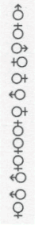

１ 生まれてきたから、死ぬまで生きてやるのだ。ただそれだけだ。
２ 日本語は正確に発音しよう。白ければシロイと。
３ ペリオド、カンマ、クエッションマアク。でも、妥協はいやだ！
４ 小さい銅像がちょうちょうとあそんでいる。彼はこの漁業町の先覚者だった。
５ 四角形、六角形、そのていたらくをみよ。
６ バクダンをもってあるいていた。生活を分数にしていた。
７ 恥をかいて、その上ぬりまでしたら、かがやき出した。
８ 私は、機関車の不器用な驀進ぶりが好きだ。
９ もし、軍人がゴウマンでなかったら、自殺する。
10 どんなきゅうくつなところでも、アグラはかける。石の上に三年坐ったやつもいる。
11 みんながみんな勝つことをのぞんだので、負けることが余りに余った。それをみんなひろいあつめたやつがいて、ツウテンジャックの計算のように、プラス・マイナスが逆になった。
12 戦争は悪の豪華版である。
13 戦争しなくとも、建設はできる。
14 飯屋のメニュウに「豚ハム」とある。うさぎの卵を注文してごらんなされ。
15 哲学は、論理の無用であることの証明にやくだつ。
16 女は、バカなやつで、自分と同じ程度の男しか理解できない。しようとしない。
17 今は、詩人の出るマクではない。ただし、マスク・ドラマはそのかぎりにあらず。
18 注訳をしながら生きていたら、注訳すること自身が生活になった。曰く、小説家。
19 批評家に曰く、批評するヒマがあったら、創作してほしい。
20 子供は、注訳なしで、にくいものをにくみ、したいことをする。だから、すきだ。
21 ぼくはずるい男なので、だれからもずるい男だと言われないように、極力気をつかった。
22 ぼくは、おしゃれなので、いつもきたないキモノをきていた。ぼくは、おしゃれなので、床屋がぼくの頭をリーゼントスタイルにしたとき、あわてた。
23 ぼくは、自分とそっくりな奴にあったことがない。もしいたら、決闘をする。
24 親馬鹿チャンリンは、助平な奴である。
25 ベートホベンがつんぼであったと言うことは、音痴がたくさんいることを意味するかしら。
26 ちかごろぼくの涙腺は、カランのやぶけた水道みたいである。ニュース映画を見ても、だだもり。
27  人生である。
28 このおれの右手をジャックナイフでなぶりころしにしてやる。おれは、ひいひいとなきわめいて、ネハンに入る。
29 どこへ行ってもにんげんがいて、おれを嗤う。おれは、嗤われるのはいやだけども、にんげんをすきだ。
30 人相学と映画学とは一脈相通じる。
32